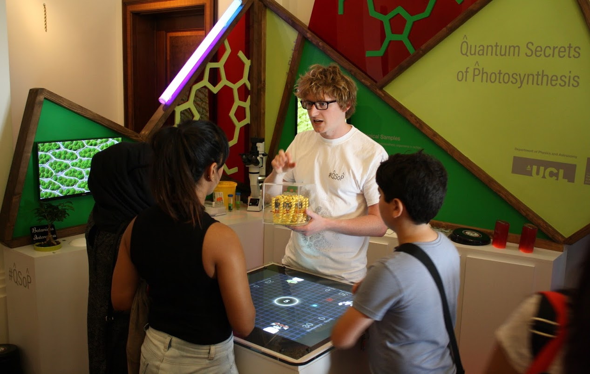
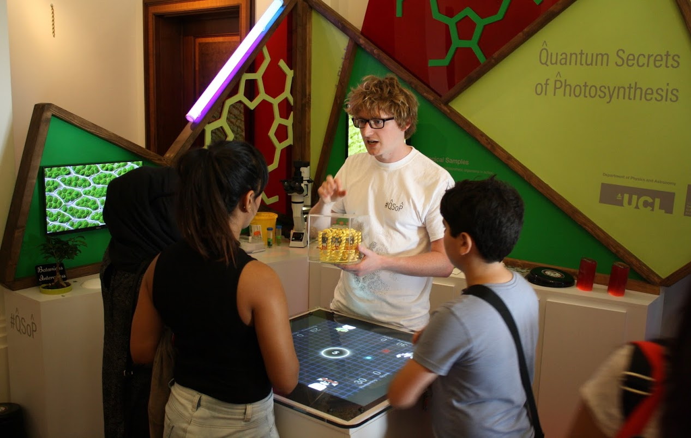
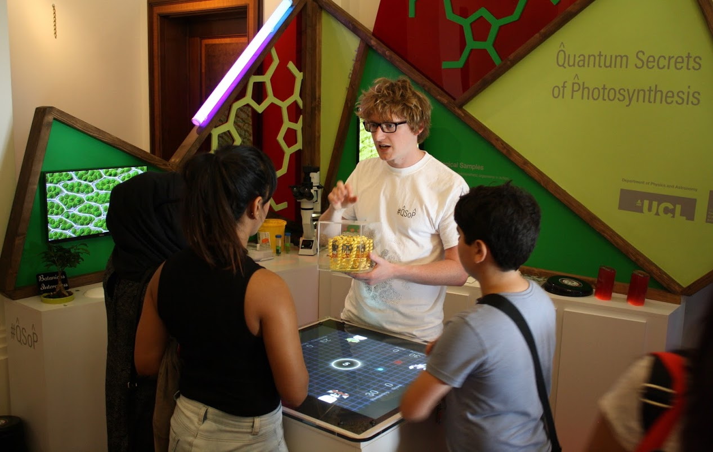

We have exhibited some of our work to the general public at several science events including
the Royal Society Summer Science Exhibition 2016. Scroll down to see more.
Alexandra also speaks about science in other contexts, including giving a talk at TEDx Bogota
in October 2016. See the video here.

 




❮
❯